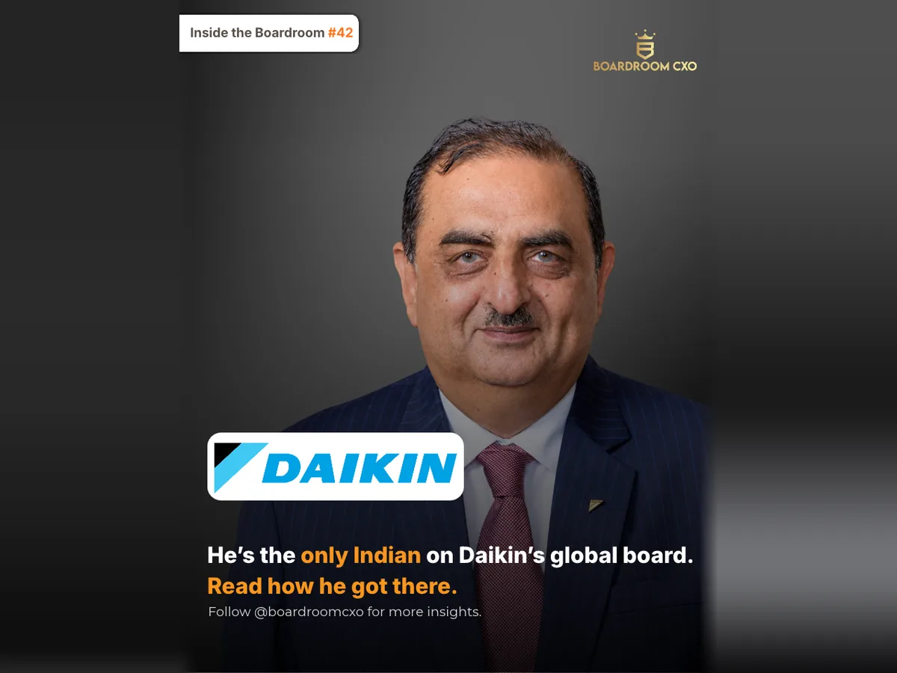

Key Takeaways
- In a 2009 brand survey, 56 out of 100 Indians had not heard of Daikin, which sold about 34,000 ACs in India in 2009/10 on revenue of about ₹440 crore.
- Kanwaljeet Jawa doubled Daikin's dealer network within a year of a 2010 meet with about 350 dealers, reached 1,800 dealers by FY13, and moved home AC production to Neemrana by 2012.
- Daikin Airconditioning India reported operating income of ₹10,361 crore in FY25, more than 23 times its 2009/10 revenue, with over 14,700 sales touch points.
"We were at that time selling to only the super rich, which is a niche."
Kanwal Jeet Jawa, the man who ran Daikin's business in India from 2010, said that about where the company stood when he arrived.
In 2009, Daikin ran a survey on how Indians saw its brand. 56 out of 100 people had not heard of the company. This was the Japanese group that leads the world in air conditioning, and it had been selling in India since 2000.
Fifteen years later, Daikin's Indian arm had an operating income of ₹10,361 crore. This is how a premium global brand learned to be known, not just respected.
Why Daikin Struggled in the Indian AC Market
When Daikin set up in India in 2000, it was a premium AC maker. Its prices were beyond the reach of most families. For years it imported its home air conditioners from Japan and Thailand, and costly imports kept it from becoming a mass-market player.
In 2004, Daikin bought out its Indian partner, the Siddharth Shriram Group, which owns the Usha brand, and made the Indian business a wholly owned subsidiary. Even then, progress was slow. As Jawa later put it, "It took them a lot of time to understand India."
By 2009/10, Daikin sold about 34,000 ACs a year in India and ranked seventh among AC makers. Revenue was about ₹440 crore. The machines were good. The problem was that too few buyers knew the name, and too few shops sold it.
In 2009, Daikin's leadership in Osaka wrote a 150-page vision document for India, called Fusion 2015. The goal was to become India's number one AC maker by revenue by 2015. A new core team of 15 was put in place to deliver it. The same year, the company cut prices by about 40% and launched models around ₹24,000.
Who Is Kanwal Jeet Jawa?
Kanwal Jeet Jawa, also written Kanwaljeet Jawa, is Chairman and Managing Director of Daikin Airconditioning India. He had more than 30 years in the air-conditioning business when Daikin hired him.
After short stints at Godrej, Blue Star and Voltas, he joined Carrier in 1987 as one of its founding team members in India and stayed 14 years. In 2001 he moved to Voltas's cooling appliances business, and later sat on the board of Universal Comfort Products, the Voltas and Fedders joint venture. His last job before Daikin was managing director of Uniflair India, part of the Italian company Uniflair, where in just over three years he set up a new factory and a distribution network from scratch.
He joined Daikin India in early 2010 as Deputy Managing Director and Chief Operating Officer. In September 2010, he was named Managing Director.
From Engineering Company to Marketing Company: What Jawa Changed
Most leaders handed a premium global brand do the safe thing. They protect the price, protect the image and wait for the market to grow into the brand. Jawa did the opposite. He took the brand to the buyer.
He took Daikin beyond the metros. In 2010, he called a dealers' meet at the ITC Hotel in Agra. About 350 dealers came, and each was offered the chance to add a second dealership in tier-II and tier-III cities. Within a year, the dealer network had doubled. By the end of FY13, Daikin had 1,800 dealers, and its regional offices had grown from four in the metros to 11 across the country.
He changed what the company thought it was. In his words:
"We were an engineering company and now becoming a marketing company, but we had to keep the engineering DNA intact."
In 2012, Daikin launched air conditioners using the R32 refrigerant, which allowed a smaller compressor and coil and cut the size of the unit by 30%. The company priced them at only about a 15% premium to its Korean rivals.
He made the ACs in India. Daikin had decided that local manufacturing was the route to the top. "We decided that to become number one in India, we had to have local manufacturing," Jawa said. The company already had a plant at Neemrana in Rajasthan, but it made only commercial ACs and chillers there. Home ACs still came from abroad.
A painful lesson in 2010 sealed it. A large consignment of home ACs got stuck in customs while dealers waited. When it was cleared, Jawa had it airlifted across the country at great cost. He started buying components locally, and by 2012 Daikin had stopped importing home ACs and was making them at Neemrana. Jawa said local sourcing cut costs by about 45%.
What Local Manufacturing and Wider Reach Delivered
The results came fast. Revenue doubled to ₹850 crore in 2010/11. By 2012/13, Daikin was selling about 4 lakh ACs a year, twelve times its 2009/10 volume, and revenue had reached ₹1,800 crore. It was then the second-largest AC maker in India by revenue, after Voltas.
The factories kept coming. Daikin added a second plant at Neemrana. In November 2023, it opened a third factory at Sri City in Andhra Pradesh, built with an investment of about ₹1,000 crore on 75.5 acres, employing 3,000 people.
The scale today:
- Operating income of ₹10,361 crore in FY25, more than 23 times the ₹440 crore of 2009/10, with a profit after tax of ₹521 crore.
- More than 2 million room ACs sold in a year, up from about 30,000 in 2010, according to the company.
- Market leader in VRV systems, the large air-conditioning systems used in offices and buildings, according to rating agency ICRA.
- Over 14,700 sales and distribution touch points, from a starting point of about 350 dealers.
In June 2018, Daikin Industries made Jawa the first Indian on its 10-member board in Japan. Its chairman for India described him as the change agent for Daikin India's turnaround since 2010.
The Boardroom Lesson: A Good Product Is Not a Known Brand
Daikin's problem in 2009 was not quality. It was awareness and access. More than half of Indians had never heard of it, and most of the rest could not find a shop that sold it at a price they could pay.
Being known for quality is not enough. You also have to be known.
The global parent supplied the technology and the money. What it needed was a leader who knew Indian dealers, Indian price points and Indian factories, and who would change the company's habits to match.
Common Mistakes Boards Make With Premium Brands in India
Multinational boards that enter India with a premium product often repeat the same three errors.
They confuse premium with small. Daikin's price cut of about 40% and models near ₹24,000 did not destroy the brand. They let far more families buy it, while the engineering stayed the same.
They import for too long. Imports protect quality control but kill speed and cost. Daikin only started to scale once home ACs were made at Neemrana and costs fell by about 45%.
They hire for the product, not the market. Engineering skill was already in the company. The missing piece was someone who knew how to build a dealer network across tier-II and tier-III towns.
A Framework for Hiring a Country Head for a Global Brand
When we brief boards on a leadership search for an MNC's India business, we push for three specific checks.
- Look for someone who has built a channel, not just managed one. Jawa had helped set up Carrier in India and built Uniflair India from scratch before Daikin. Ask candidates how many dealers or partners they have added, and where.
- Test their view on local manufacturing. For many categories in India, cost and speed decide the market. Ask what share of the product a candidate would make locally, and how fast.
- Check they can speak to the parent. Daikin's India plan was written in Osaka. A country head has to win the parent's trust and money. A seat on the global board, as Jawa got in 2018, is the clearest sign it worked.
Why This Belongs in the Boardroom, Not Just the Business Pages
Daikin's story sits next to the one we told about R C Bhargava at Maruti Suzuki, another Japanese parent that trusted an Indian leader to read the market. It also echoes C K Venkataraman at Tanishq, who had to fix how a strong brand was seen by Indian buyers.
Quality earns respect. Reach earns customers.
Sources
- Business Standard, Daikin appoints India Managing Director, September 2010
- Business Today, Behind Daikin Industries' remarkable turnaround in India, December 2013
- Business Standard (PTI), Daikin Industries elevates India head to global board, June 2018
- The CEO Magazine, Kanwaljeet Jawa, Managing Director and CEO of Daikin India, May 2021
- The Hans India, Tirupati: Daikin inaugurates its new plant in Sri City, November 2023
- Cooling Post, Daikin opens third factory in India, December 2023
- The Week (PTI), Daikin India looks to expand in North markets, opens new office in Chandigarh, July 2025
- ICRA, Daikin Airconditioning India Private Limited: Rating reaffirmed, August 2025
Related Reading
R C Bhargava: Maruti's Share Hit a 13-Year Low. It Still Sold a Record 24 Lakh Cars.
Read → R · 02 Founder Leadership · August 2026C K Venkataraman: How Tanishq Fixed Years of Being Wrong About India
Read → R · 03 Founder Leadership · October 2026Shailesh Chandra Took Over Tata's Cars at Their Low Point. Sales Are Now Nearly 5x.
Read →Hiring a country head who can make a global brand known in India?
We screen for leaders who have built dealer networks and local operations from scratch, not just run a brand the parent already made famous. Brief us on your next CXO mandate and we will tell you what the market actually has to offer.
Brief Us on a Mandate See all Marketing roles we fill →